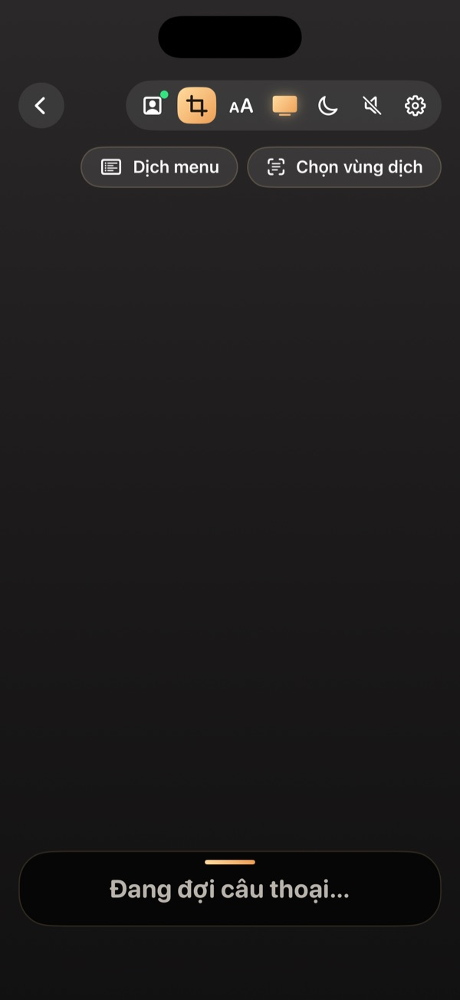

Cách chơi PS5 tiếng Việt trên máy zin, không cần hack
Cập nhật ngày 3/11/2026
Bạn có thể chơi game PS5 với phụ đề tiếng Việt mà không cần hack. App Console Translator: Dịch game đọc chữ tiếng Anh trên hình game rồi hiện bản dịch trên TV, điện thoại hoặc máy tính.
Máy PS5 zin không cài được các bản Việt hóa như máy đã can thiệp. Vì vậy, nhiều người chơi không giỏi tiếng Anh thường bỏ qua cốt truyện hoặc phải tra từng câu.
App dịch game PS5 hoạt động thế nào?
App nhận hình game qua Chơi từ xa (Remote Play) hoặc capture card, nhận diện chữ trên màn hình, dịch sang tiếng Việt rồi hiện kết quả. Nó không sửa file game hay hệ thống của máy.
Bạn cần chuẩn bị gì?
- Máy PS5 đã bật Chơi từ xa.
- Một điện thoại hoặc máy tính để chạy dịch.
- Các thiết bị dùng chung Wi-Fi khi ghép nối lần đầu.
- Một tài khoản PlayStation phụ để tay cầm chính không bị ngắt.
- Game đã bật phụ đề tiếng Anh.
Chọn cách chơi phù hợp
- Android TV, Google TV: Sony, TCL, Xiaomi và các TV tương thích.
- TV LG và TV Samsung: phụ đề hiện trên TV.
- Điện thoại: chơi và đọc phụ đề ngay trên máy.
- PC: Chơi từ xa trong app hoặc capture card.

Bắt đầu từ đâu?
Hãy làm theo bài kết nối app với PS5. Bước này chỉ làm một lần. Sau đó bạn tìm game của mình trong kho game.
Câu hỏi thường gặp
Chơi PS5 tiếng Việt có phải hack máy không?
Không. App đọc chữ trên hình rồi hiện bản dịch trên thiết bị của bạn, không sửa game hay hệ thống của máy.
Game không có trong kho có dịch được không?
Vẫn dịch được nếu game hiện phụ đề mà app đọc được. Game trong kho có thêm tên riêng và văn phong phù hợp hơn khi dùng Dịch AI.
Bản dịch có chính xác tuyệt đối không?
Không. Bản dịch tự động có thể sai ở tiếng lóng, tên riêng hoặc chữ khó đọc.
Xem thêm
Xem hướng dẫn cài đặt →Console Translator là dự án độc lập, không liên kết với Sony, LG hay Samsung. Tên game và nhãn hiệu thuộc về chủ sở hữu tương ứng.